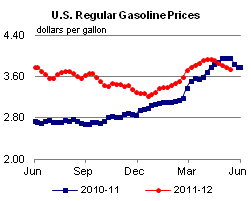
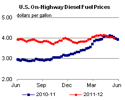
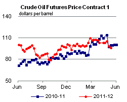
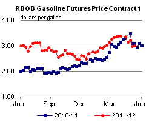
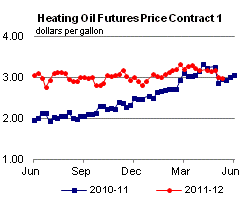
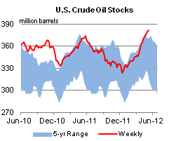
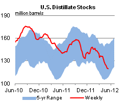
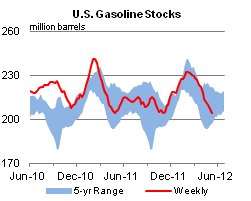
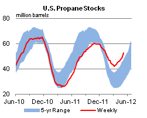

Released: May 16, 2012
Next Release: May 23, 2012
Cushing crude oil inventories at record levels
Crude oil inventories at the Cushing, Oklahoma storage hub reached a record 45.1 million barrels on May 11 (Figure 1), after rising 16.9 million barrels since January 13, a marked contrast to the relatively flat level of inventories over January through April in recent years. The increases have come ahead of the Seaway pipeline reversal, expected to commence this week, and are largely the result of growing U.S. inland production and increasing imports from Canada. However, with the imminent reversal, the inventory builds have not weighed disproportionately on West Texas Intermediate (WTI) crude oil prices, which have held up relatively well against global crudes such as Brent over the past few months.
{kind=link}
This year, we have not seen a repeat of 2011, when Cushing inventories reached a then-record 41.9 million barrels in early April, before generally declining slowly for the rest of the year as Cushing-linked refiners ran increasing amounts of crude. Instead, inventories have increased steadily into early May despite refineries in the Midwest running at record levels. Since January 13, gross inputs at Midwest refineries (most of which have access to Cushing crude) have averaged about 166,000 barrels per day (bbl/d) (5 percent) above year-ago levels, which themselves were above seasonally-typical averages. These increased runs have not been able to absorb increasing U.S. inland crude oil production and imports from Canada. Based on EIA monthly data, Midwest crude production in 2012 through February (the most recent data point) was more than 250,000 bbl/d (35 percent) higher than during the same period of 2011. Moreover, Canadian imports into the Midwest have also been at record levels. Monthly data show the Midwest received about 350,000 bbl/d (25 percent) more Canadian crude in January and February of 2012 than they did in the first two months of 2011. Not all of this goes into Cushing, but with inventories down elsewhere in the Midwest in 2012, the increased imports from Canada are likely pushing more inventories in that direction. While EIA weekly data do not break out country-level weekly imports by area of entry, most Canadian imports enter PADD 2. These preliminary data indicate the elevated Canadian imports have continued in March through May with volumes about 360,000 bbl/d higher than in 2011, continuing the pressure on Cushing inventories.
Some of this pressure may be relieved as the Seaway pipeline is reversed and deliveries from Cushing into the Houston area begin. Inventory builds notwithstanding, WTI prices have held up relatively well recently against global crudes such as Brent, as market participants appear to have anticipated the impact of the reversal. After WTI averaged about an $18-per-barrel discount in February and March, that discount has narrowed by more than $1 per barrel in April and May. The WTI futures curve provides further evidence that the inventory builds may be seen as temporary. Counter to what might be expected when inventories build strongly, there has been no associated increase in contango which would signal a supply glut at Cushing. The average 1st-2nd month contango has averaged $0.44 per barrel in April and May, a penny decrease from the average in February and March, and lower than year-ago levels. Conversely, backwardation on the front end of the Brent curve has weakened somewhat over the same period, indicating perceptions of near-term global market dynamics have weakened.
In addition to the Seaway reversal, increased runs at Midwest refineries following typical seasonal patterns could drain some inventories from Cushing in the coming weeks. But Midwest refineries' capacity to run more crude oil has its limits, as utilization rates in the region have averaged 93 percent over the past 12 months. In the longer term, the key to the Cushing inventory story depends on the timing among likely increases in U.S. tight oil production U.S. tight oil production, Canadian imports, and takeaway capacity.
Gasoline prices fall for sixth straight week
The U.S. average retail price of regular gasoline decreased 4 cents this week to $3.75 per gallon, 21 cents per gallon lower than last year at this time. This marks the sixth straight week of decline, and the first time since June 2011 that the price has decreased for six or more consecutive weeks. Prices decreased in all regions except the West Coast, where the price increased 12 cents to $4.26 per gallon. The Rocky Mountain price was down a fraction of a penny to remain at $3.76 per gallon. East of the Rockies, the East Coast and Gulf Coast prices both decreased about 6 cents to reach $3.70 per gallon and $3.56 per gallon, respectively. The Midwest saw a decrease of 8 cents, the largest in the Nation, to reach $3.64 per gallon.
The national average diesel fuel price decreased more than 5 cents to $4.00 per gallon, 6 cents per gallon lower than last year at this time. Prices dropped in all regions, with the Midwest seeing the largest decline, at about 7 cents, to reach $3.90 per gallon and remain the least expensive in the Nation. The Gulf Coast price is now $3.92 per gallon and diesel in the Rocky Mountains is $4.00 per gallon. Prices on the East and West Coasts are still above the $4 mark, at $4.05 per gallon and $4.28 per gallon, respectively.
Propane stocks post a strong build
Last week, propane inventories grew across most regions of the United States, adding 1.7 million barrels to end at 52.7 million barrels, 73 percent higher than a year ago. The Gulf Coast region led the gain with 0.9 million barrels of new propane inventory, followed by the Midwest, which added 0.4 million barrels. East Coast stocks grew by 0.3 million barrels, while Rocky Mountain/West Coast regional stocks rose slightly. Propylene non-fuel-use inventories represented 7.0 percent of total propane inventories.
Text from the previous editions of This Week In Petroleum is accessible through a link at the top right-hand corner of this page.
|  |  | ||||||
| Retail Data | Change From Last | Retail Data | Change From Last | ||||
| 05/14/12 | Week | Year | 05/14/12 | Week | Year | ||
| Gasoline | 3.754 | Diesel Fuel | 4.004 | ||||
|  |  | ||||||||||||||||||||||||||
|
 | ||||||||||||||||||||||||||
| *Note: Crude Oil Price in Dollars per Barrel. | |||||||||||||||||||||||||||
|  |  | ||||||
|  |  | ||||||
| Stocks Data | Change From Last | Stocks Data | Change From Last | ||||
| 05/11/12 | Week | Year | 05/11/12 | Week | Year | ||
| Crude Oil | 381.6 | Distillate | 119.8 | ||||
| Gasoline | 204.3 | Propane | 52.725 | ||||